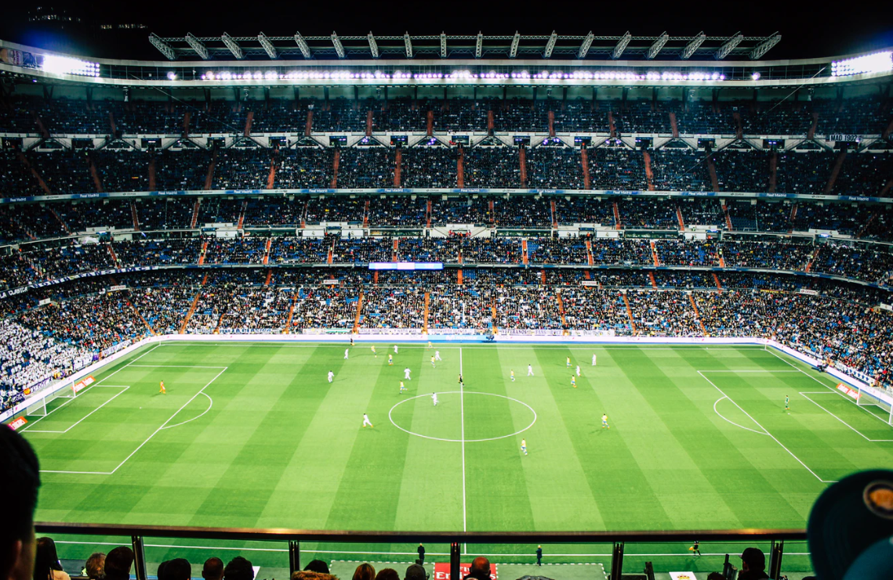
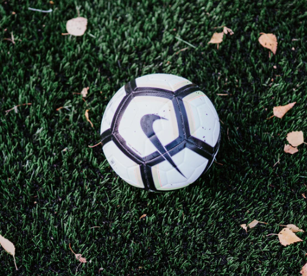
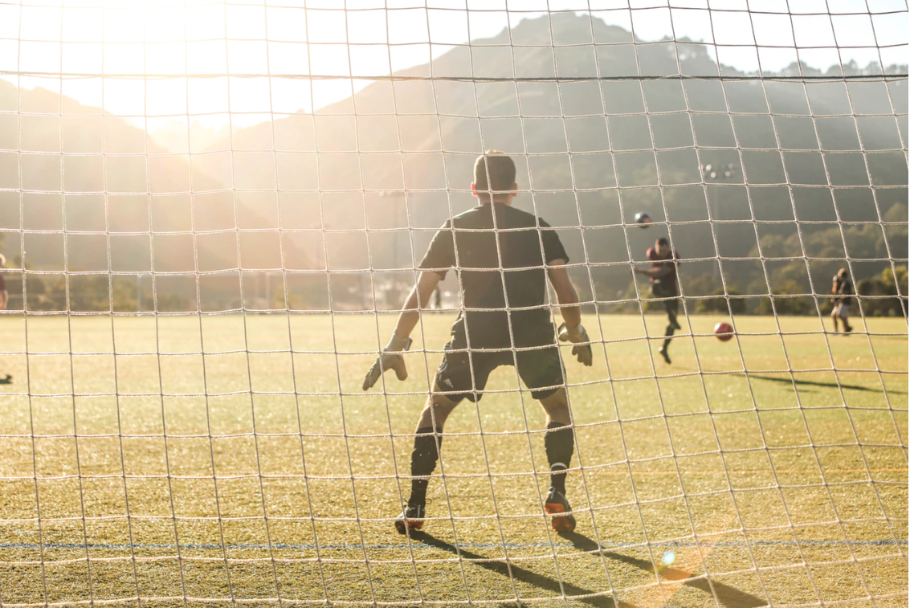
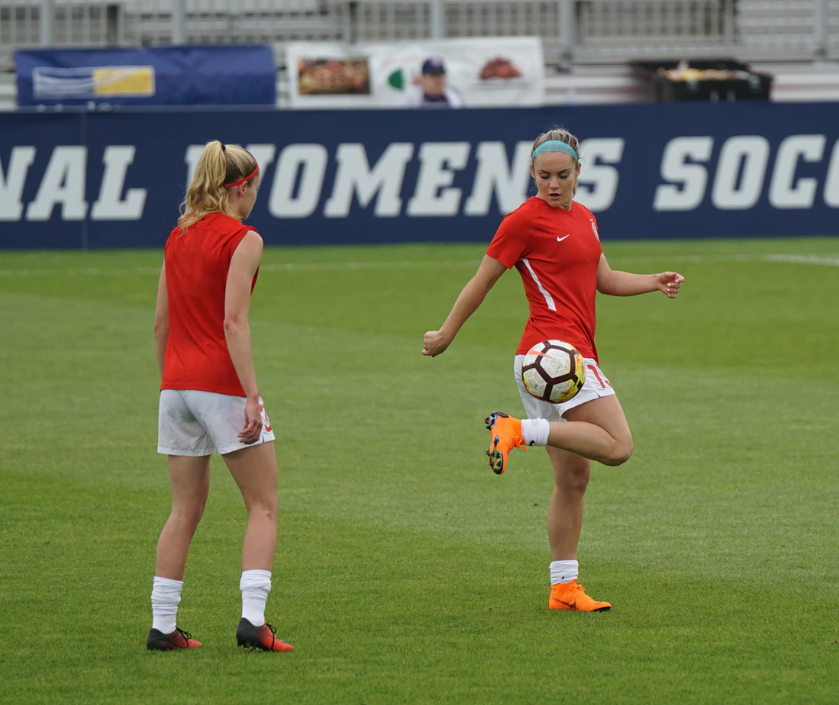

Our goal
Seize matches sans défaite, en deux compétitions confondues. L'OM champion en 2010 n'avait pas réussi pareille série. Pour trouver mieux, il faut remonter aux premiers mois de la saison 1998-99 où l'équipe de Rolland Courbis avait aligné 18 matches avant de perdre à Lyon, et plus loin à la grande équipe de Raymond Goethals qui avait disputé 23 rencontres sans défaite entre janvier et mai 1991 (dont les fameuses confrontations avec le Milan AC) mais qui s'était arrêtée à 14 rencontres, à la charnière de l'hiver et du printemps 1993.Cette performance accomplie par l'OM 2019-2020 d'André Villas-Boas n'est pas anodine. Une longue invincibilité, qui s'accompagne toujours de matches de qualités diverses, car ce n'est pas le Pérou toutes les semaines, mais c'est l'apanage des meilleurs millésimes. -source : LA PROVENCE

Le doux parfum de la Coupe de France revient chaque saison au plus grand plaisir de nombreux amateurs de football. Amateurs, comme certaines équipes qui ont fait chavirer “la France du foot” par leurs exploits et épopées au fil des années. Cette compétition vieille de 102 ans est avant tout une grande fête et fait partie de l’histoire du sport français, à l’image des Coupes de France dans d’autres sports. Il est toujours agréable de retracer quelques exploits historiques des “petits poucets” . - source : Foot amateur .

Que nenni ! Cet ancien joueur de Division d’Honneur a souhaité officier sur une rencontre de l’élite départementale. Et son choix s’est porté sur Portugais de Blois – Villebarou. « Je ne le savais lorsque j’ai choisi ce match mais il existait un fort contentieux entre les deux clubs » confie ce journaliste expérimenté qui a vécu plusieurs coupe du Monde. Mais avant de pouvoir arbitrer, il a dû prendre une licence mais aussi « aller faire deux ou trois footings pour retrouver un semblant de condition physique ».Avec la présence de Jean-Michel Denonin, vice-président délégué du district, et Laurent Czwojdzinski, le président départemental de l’Union nationale des arbitres de football (UNAF), Pierre Michel a donc arbitré son match… non sans mal ! - source : Foot amateur.

L’article 155.2 des règlements généraux de la FFF indique en effet que « les équipes féminines U15F peuvent participer à des épreuves régionales ou départementales masculines U13 ». Lors de l’assemblée fédérale de ce week-end, une proposition venue de la Ligue du Grand-Est sur l’élargissement de la mixité a été largement votée. Désormais, « les équipes féminines U15F peuvent participer à des épreuves régionales ou départementales masculines U13, U14 ou U15, à 11 ou à 8. » Un point qui a fait débat. « Ce n’est pas tout le vœux qu’on avait proposé avec le District de la Marne, indique Gérard Cassegrain, président du District de la Marne. On souhaitait juste qu’une équipe U15 féminine puisse jouer en championnat U15 masculin. » - source : Foot amateur.
Stay tune for more information.